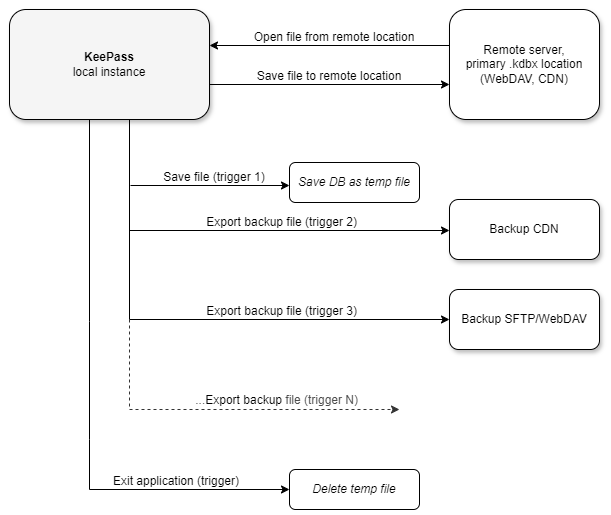

Seamless and secure way to manage your Keepass database, where every update you make is automatically synchronized and backed up without additional effort. The outlined solution enables this by connecting your local instance of Keepass to a remote WebDAV server, ensuring that your password database (.kdbx file) is always safely stored and accessible from any location.

When you open Keepass, the latest version of your database is retrieved from a WebDAV server (or any remote location). This ensures you’re are always working with the most up-to-date information, regardless of your location or the number of devices you utilize.
Whenever you save your database, automated triggers are executed to ensure that your data is not only stored securely but also backed up in additional location. The first trigger creates a provisional temporary copy of the .kdbx file on your local machine. This copy serves as a safeguard during the backup process, ensuring that your working version remains intact.
Immediately after, the second trigger uploads this temporary copy to a designated CDN (Content Delivery Network). This step creates a secure backup of your database, providing an additional layer of protection by storing it in a different location.
When you’re done using Keepass and decide to exit the application, a final trigger is activated. This trigger automatically deletes the provisional temporary file created during the save process, ensuring that no unnecessary copies of your sensitive data remain on the device.
How to use
1) Install KeePass (Installation »)
2) Open KeePass and go to File > Open > Open URL... and enter remote location of .kdbx file and credentials (if applicable). If you enter Username and Password then select prefered option for Remember field. Next time when you open KeePass you can open your .kdbx file from File > Open Recent
3) Create a dedicated KeePass entry (DO-NOT-DELETE-T1) to store Cloudinary credentials
4) Configure required KeePass triggers, go to Tools > Triggers...
4.1) Export database on save
- Properties
- Name: Export database on save
- Enabled: true
- Initially on: true
- Events
- Event: Saved database file
- Conditions - not used
- Actions
- Action: Export active database
- File/URL: location\to\store\{DB_BASENAME}.kdbx(1)
- File format: KeePass KDBX (2.x)
(1)Location where temp .kdbx file to be saved
4.2) Store database file on remote CDN
- Properties
- Name: Store database file on remote CDN
- Enabled: true
- Initially on: true
- Events
- Event: Saved database file
- Conditions - not used
- Actions
- Action: Execute command line / URL
- File/URL: path\to\git\git-bash.exe(1)
- Arguments: path/to/cloudinary.bash "location/to/store/{DB_BASENAME}.kdbx" "{DB_BASENAME}.kdbx" {REF:N@T:DO-NOT-DELETE-T1}(2)
- Wait for exit: true
- Window style: Maximized
- Action: Show message box
- Main instruction: Database {DB_BASENAME} stored on remote CDN
- Icon: None
- Buttons: OK
- Default button: Button 1
- Action - Condition: Button OK/Yes
- Action: None
(1)Path to git-bash.exe; not tested with powershell(2)Command to execute for uploading file to Cloudinary CDN by using cUrl. Required command line arguments:
- local path to file to be uploaded
- Cloudinary plublicId of the uploaded file
- Cloudinary cloud name
- Cloudinary API key
- Cloudinary API secret
- Cloudinary folder where file will be uploaded (optional)
Note: Check repo for shell script cloudinary.bash
Note: Parameters 3) to 6) are taken from a dedicated KeePass entry (DO-NOT-DELETE-T1), this means all Cloudinary related credentials are stored in KeePass database.
4.3) Delete temp file/s on exit
- Properties
- Name: Delete temp file/s on exit
- Enabled: true
- Initially on: true
- Events
- Event: Application exit
- Conditions - not used
- Actions
- Action: Execute command line / URL
- File/URL: %comspec%(1)
- Arguments: /c del "C:\tmp\directory\*.kdbx"(2)
- Wait for exit: true
- Window style: Hidden
(1)The command interpreter, which by default is cmd.exe in NT systems, and COMMAND.COM in DOS systems(2)Command to execute with required arguments